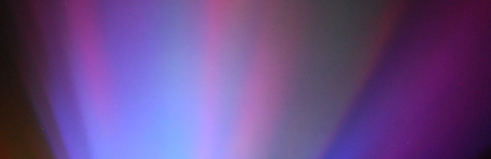
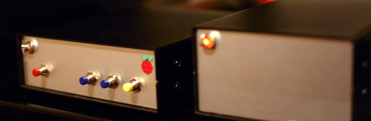

Creating Aurora night lamp
Published on 04-21-2014, Tags: arduino, hardware, kids
Aurora projected on the wall. Switches on automatically when it's dark. Build with Arduino and two RGB LEDs.
Building a hifi network music player
Published on 04-20-2014, Tags: raspberrypi, hifiberry, audio, hardware
Device navigated by smartphone app or hardware buttons. Plays music from network disc, internet radio and allows streaming from any Apple device via shAirPlay. All in one box. Quality? Up to 192kHz/24bit.